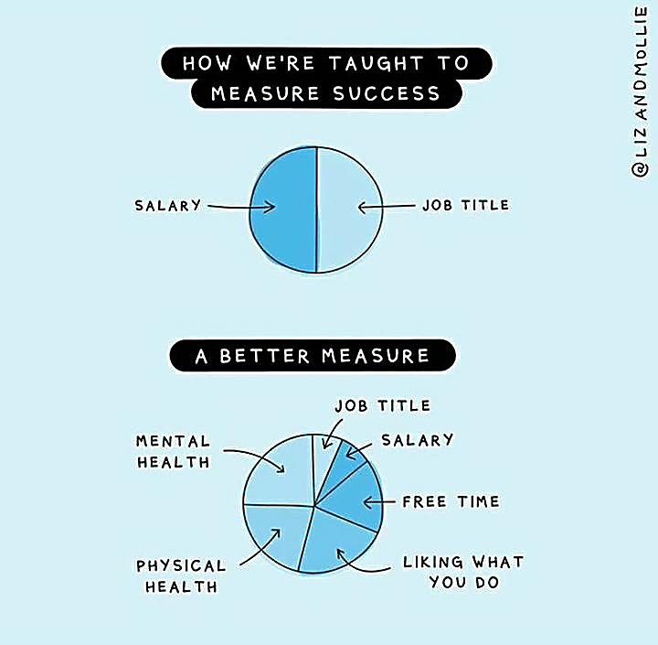

article - 12/02/20 View Article Here
Happy International Day of Women and Girls in science!
Growing up as generation Z in the 21st Century, globalisation, technology, science and mathematics have revolutionized our experience of the world. STEM has enhanced our lives where it has become more of a way of life and not merely about our career paths and subject choices.
Our robotics team members all have an aching passion for STEM, allowing it to catapult us into the ever changing dimensions of the fourth Industrial Revolution/ Digital age.
We have participated for three consecutive years in FIRST Lego robotics League (FLL), having achieved national recognition for core values and provincial recognition for robot design and programming. This has ignited in us the confidence to step out internationally into Rwanda, our fellow African soil later in this year.
Being a predominantly female team, we hope to inspire and create awareness for girls to be courageous enough to take on challenges in STEM.
According to the UN women's website, although women have been pioneers with regards to inventions and research in STEM, only 35% of students in the field of STEM are female - Women are deterred from careers in STEM and the world is missing out on untapped talent. - Women are being faced with gender stereotypes, less pay and being held back from leadership positions.
Presently, only 1% of the girls in our school do Information Technology, and only 2 girls in Willowmoore do Mechanical Engineering.
This statistic is a sad reality that we hope can be changed by changing the perceptions in society that hold women back from realising their true potential...
Through the growth of our school's robotics team, we hope to encourage girls to be empowered by the endless amount of opportunities present; to overcome the fear and stereotypes and to grow a passion for Science, Technology, Engineering and Math.
Should we break these gender-based barriers?! No. But instead, forget that these barriers even exist!!!
article - 30/06/21
You can't tell a high school student to "find your passion." Do any of us even know how to? We've got this far by simply having a passion for success. The classes, tuition, and all-nighters have left us with no time or tools to figure out what we want out of life. Questions of passion and purpose were not in our syllabus.
As the white blazer, I may be miserable, but if I wasn't miserable, I wouldn't be the white blazer in the first place. And sadly, that is the case for many well performing students - rising to the absolute top means being consumed by the system. When you look underneath the façade of confidence that academically strong learners have learned to project, you'll often find unhealthy levels of anxiety and depression. Learners now have very little intellectual curiosity and a stunted sense of purpose: we're great at what we do but have no idea why we do it.
Using a personal example, I've sacrificed myself and my mental health for my whole school life, and it took such a toll on me that I had a major burnout. The unfortunate reality is that I'm not the only one. We see students everyday struggling with mental health issues - how many of us cope by taking antidepressants or anti-anxiety medications, relying on stimulants like Bioplus to stay up all nights and skipping school the days before tests to cope by studying?
It would be bad enough if all this misery in schools were being inflicted for the sake of genuine learning, but school is now all about doing your homework, getting the answers and acing the test. We’ve learned to “be a student,” and not to use our minds. Schools value students who give them what they want, so they reward manipulators who are haunted by a fear of failure - nobody wants to take a chance on a class or test that they might not ace, so nobody is willing to venture beyond the things they already know to expand their mind.
Our impressive system of higher education: students kill themselves getting into it, parents kill themselves to pay for it. So what then is this all finally for? I'm not saying don’t get an education, I'm saying:
DON’T LET SCHOOL CONSUME YOU.

Unfortunately, it took me a long time and burn out to learn that I AM MORE THAN JUST MARKS AND RESULTS. Being a quadruple major or a 90s student does not make you interesting. Who said you have to be accomplished to be interesting? What makes you interesting is that rich inner life you have going for yourself. Having an impressive CV is one thing, but having an impressive mind is another, and trust me, if you do, they’ll see that in the interview. Prioritizing yourself, getting a full night sleep, eating healthy outputs better results!
The first thing that school should teach you… is to think. That’s a cliché but it means developing the habit of scepticism and the capacity to put it into practice. It means learning not to take things for granted and reaching your own conclusions. Eg: don’t take for granted that the shape is a parallelogram - come to your own conclusion.
Learning how to think is only the beginning, though. You need to think about yourself. "Finding yourself" means finding who you are outside of the framework of school. "Passion finds you, you don’t find it" and this includes questioning everything you thought you knew about yourself. The process isn’t comfortable, but it is exhilarating and there’s nothing academic about it.
If you find yourself to be the same person at the end of your high school journey, as you were at the beginning—the same beliefs, the same values, the same desires, the same goals for the same reasons — then you did it wrong. You might as well go back and do it all over again.